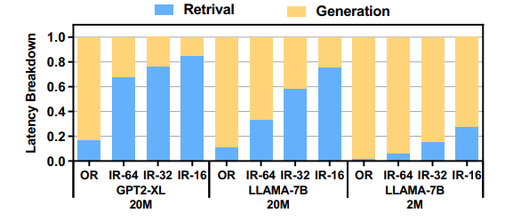
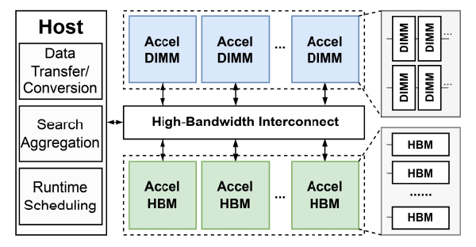
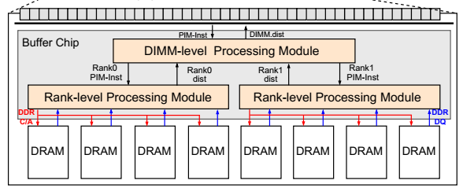
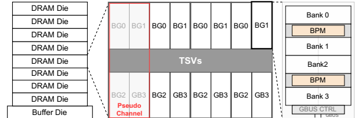
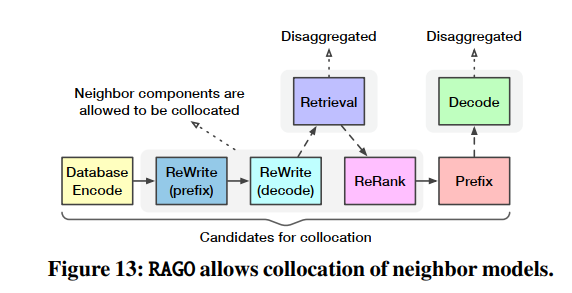
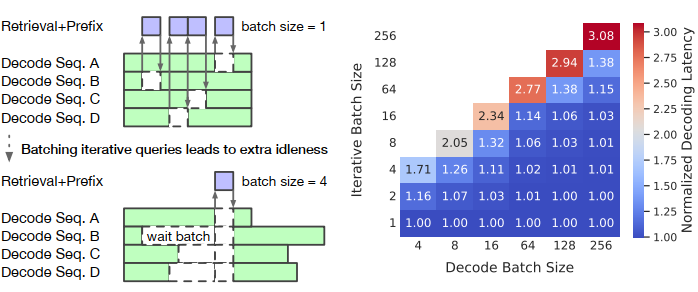
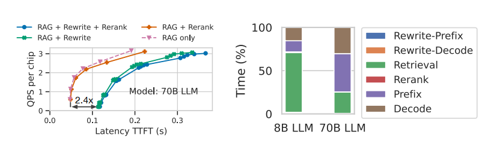
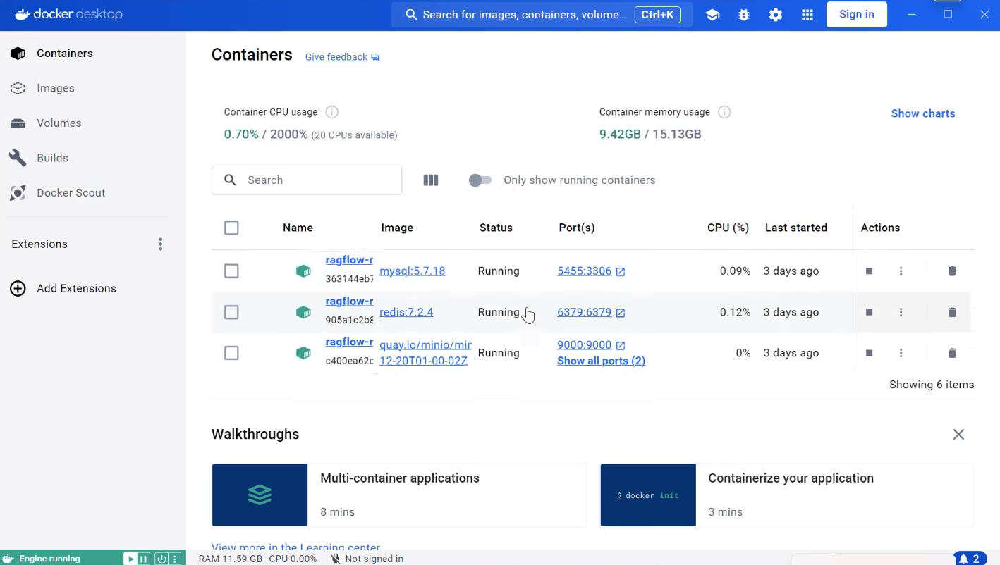
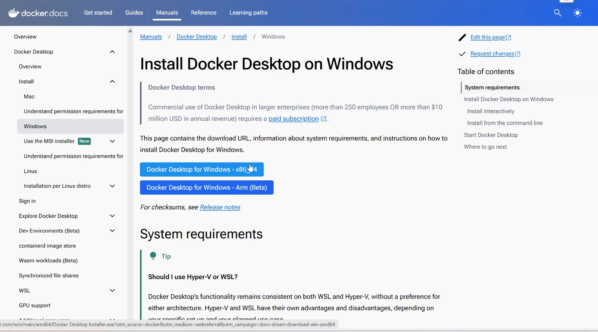
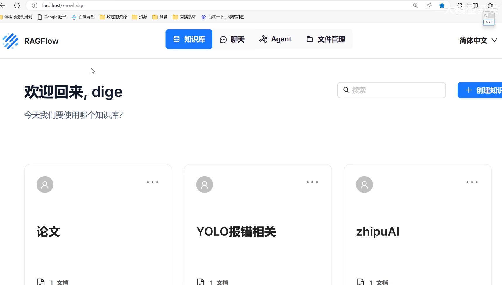

HeterRAG 异构 PIM 加速 RAG 系统
1. 研究背景
Retrieval-augmented Generation (RAG) 通过结合外部知识库，极大地增强了大型语言模型（LLM）在知识密集型任务上的表现 。
RAG面临问题挑战：
- 高带宽瓶颈 (Bandwidth Bottleneck):
检索阶段： 随机和不规则的内存访问模式导致带宽利用率低下
生成阶段： 涉及大量的通用矩阵向量乘法 (GEMV) 操作，受限于内存带宽 。 - 高内存瓶颈 (Capacity Bottleneck):
检索阶段： 需要维护大规模的知识库（文档、向量、索引），导致巨大的存储开销 。
核心矛盾：
- HBM-PIM 方案： 拥有极高带宽，适合解决“带宽瓶颈”；但容量小、成本高，无法满足 RAG 的“容量瓶颈” 。
- DIMM-PIM 方案： 拥有大容量、低成本，适合解决“容量瓶颈”；但其带宽远低于 HBM，无法满足“带宽瓶颈” 。
补充知识：有关 DIMM 与 HBM 的介绍
PIM：存内计算（Processing-In-Memory, PIM）
基于 DIMM 的 PIM：DIMM 采用 DDR 芯片的二维布局，从而降低制造成本，使用户能够以实惠的价格获得大容量内存。
基于 HBM 的 PIM：HBM 采用 3D 堆叠结构，通过 TSV 垂直连接，带来高带宽、低延迟和低功耗，但制造成本较高。

2. HeterRAG Architecture

1.主机(Host):
分配“检索”任务给 AccelDIMM，“生成”任务给 AccelHBM
进行数据传输和格式转换
收集所有 AccelDIMM 返回的检索结果
2.互连 (Interconnect)
系统允许你独立地增加 AccelDIMM（用于检索）或 AccelHBM（用于生成）的数量。
定制化连接：可以通过 PCIe 插槽和 CXL 交换机连接不同数量的 PIM 设备，以满足 RAG 系统对“检索容量”或“生成能力”的特定需求
3.AccelDIMM (DIMM 加速器)
离线 (Offline)： 海量（TB 级）的知识库索引被分割成多份，分别存储在不同的 AccelDIMM 设备中。
在线 (Online)： 当查询请求到来时，主机会将请求“广播”给所有的 AccelDIMM。
并行处理：所有 AccelDIMM 设备同时、并行地在各自存储的数据中执行搜索，然后各自返回最佳结果给主机。
4.AccelHBM (HBM 加速器)
并行策略：
张量并行 (Tensor Parallelism，默认)： 多个 AccelHBM 同时计算模型权重的不同部分，然后聚合结果。
流水线并行 (Pipeline Parallelism)： 当模型非常大时，将其按层切分成多个阶段，像工厂流水线一样分配给不同的 AccelHBM 按顺序处理。
5.执行流程 (Execution Flow)
[Host] 主机接收查询，将其转换为向量。
[Host → AccelDIMMs] 主机将此向量广播给所有 AccelDIMM。
[AccelDIMMs] (检索) 所有 AccelDIMM 并行搜索，各自返回 Top-k 结果。
[Host] 主机聚合所有结果，排序后得到最终的 Top-k。
[Host] 主机根据向量 ID 找到对应的文档原文，并将其与原始查询打包成 LLM 的输入张量。
[Host → AccelHBMs] 主机将此张量发送给 AccelHBM。
[AccelHBMs] (生成) AccelHBM 执行 LLM 推理，生成最终答案。
3.AccelDIMM 硬件架构总结
1.核心设计理念：选择性卸载 (Selective Offloading)
AccelDIMM 专为 ANNS（近似最近邻搜索）操作设计。ANNS 包含多个步骤，但并非所有步骤都适合 PIM。
1.不卸载的任务：
• 邻居抓取: 此任务涉及内存访问和结果过滤。但维护一个“已访问节点”列表会引入显著的硬件面积开销，不适合卸载。
• 队列更新: 此任务需要对计算结果进行集中聚合和排序，其逻辑不适合 PIM。
2.卸载的任务：
• 距离计算: 这是 ANNS 中计算最密集且最易并行的部分。因此，内存卸载严格限制 (restricted) 在此操作。
2. 整体架构

1.顶层处理模块 (Top-level Processing Module)
TPM 是 AccelDIMM 的总控制中心，负责管理整个 ANNS 流程。
构成主要包含指令队列、指令解码器 和 功能块 (FB)。
功能：接收并解码主机指令，启动 ANNS 操作。FB 负责管理邻居抓取和队列更新，并生成 PIM 请求以进行距离计算。
2.内存控制器 (Memory Controller)
PIM 扩展：集成了 PIM 扩展模块，用于处理 地址映射 和 PIM 指令生成。
3.PIM-enabled DIMM (启用 PIM 的内存条)
执行存内计算的核心硬件。
关键设计决策 (Rank-level vs. Bank-level)：Bank 级部署计算,将导致大量计算资源空闲和更高的面积开销。因此，本设计选择在Rank 级（更大的内存单元）部署距离计算模块，以提高效率。

(a) DIMM 级处理模块 (DPM)
从顶层模块 (TPM) 接收 PIM 指令，然后根据指令中的“Rank ID”，将任务分发给对应的 Rank 级处理模块 (RPM)。它内部有专用缓冲区，用来临时存储所有 RPM 完成的计算结果。它以“轮询”的方式，将收集到的结果通过标准内存接口传回给 AccelDIMM 的顶层模块 (TPM) 进行排序。
(b)Rank 级处理模块 (RPM)
每个 Rank 都配有一个，因此它们可以并行处理任务，主要负责解码与缓存，并执行计算距离。比较巧妙的地方它并不直接从DRAM取数据，而是先检查本地高速缓存，如果缓存命中：直接将向量数据送去计算，如果缓存未命中：它会自动生成标准 DDR 命令，拿取数据进行计算，
4. AccelHBM 硬件架构
1.核心设计理念
AccelHBM 专为 LLM（大语言模型）推理的“生成”阶段设计。其核心策略是在“操作级别 (operation level)”进行加速，即对 LLM 中的不同运算类型进行区别处理。
LLM 推理主要涉及三类操作：
1.GEMM (矩阵-矩阵乘法)
计算逻辑更复杂或计算更密集，这些操作在内存之外处理，即在 AccelHBM 的顶层处理模块 (TPM) 上执行。
2.GEMV (矩阵-向量乘法)
GEMV 具有低算术强度,是典型的“内存带宽受限”操作,完全卸载到 PIM-HBM 内存中执行。
3.其他操作 (如 LayerNorm, RMSNorm, Softmax 等元素级计算和归一化)
2.顶层处理模块 (Top-level Processing Module)
TPM 是 AccelHBM 的“大脑”和“本地计算单元”，其内部的功能块 (Functional Block - FB) 负责处理所有未卸载到内存的任务。

3.PIM-enabled HBM
负责存储模型权重、KV 缓存，并在内存中就地执行 GEMV。
1.关键架构差异 (vs. AccelDIMM)：
AccelDIMM (检索)： 由于 ANNS 访问模式稀疏，采用 Rank-level (Rank 级) 部署计算单元。
AccelHBM (生成)： 为了最大化计算效率，借鉴 Newton等先进设计，采用 Bank-level (Bank 级) 部署处理模块。
Bank 级处理模块 (BPM)： 是 HBM 内部的实际计算单元 每个 BPM 包含两个用于向量内积 (vector inner product) 操作的计算单元

5. HeterRAG 的软件硬件协同优化与系统设计
1.RAG 系统的两大系统级瓶颈
•数据局部性: RAG 系统存在高度局部性（少数文档被高频访问，且迭代查询常复用文档），但现有系统未利用此特性，导致冗余计算和数据传输。
•严格串行: “检索”和“生成”阶段必须串行执行，导致硬件（AccelDIMM 或 AccelHBM）空闲，利用率低下。
2.三大软件硬件协同优化方案
1.感知局部性的检索
• 硬件优化 (RPM 缓存): 在 AccelDIMM 的 RPM 模块中增加了向量缓存 (vertex vector cache)，用于缓存高频访问的向量，减少DRAM访问。
• 软件优化 (迭代加速): 在迭代 RAG 场景中，复用上一轮的搜索结果作为新一轮搜索的“起始点”，加速搜索收敛。
2.感知局部性的生成
• 核心问题: 解决 LLM 生成 (Prefilling 阶段) 中 KV 缓存的冗余计算和高内存占用问题。
• 解决方案 (前缀树 + 选择性计算):
• 1.使用前缀树 (Prefix Tree) 来组织文档序列。
• 2.将 KV 缓存拆分为稠密(文档固有，只存一份)和稀疏（序列相关，只存 10-20% 的重要 Token）。
• 硬件支持: 在 AccelHBM 的 TPM 中增加了三个专用硬件（树搜索单元、KV 替换单元、Token 过滤单元）来高效执行此方案。
3.细粒度并行流水线
• 核心目标: 打破检索和生成的串行依赖，实现两个阶段的执行重叠 (Overlap)。
• 解决方案: 主机 (Host) 不再等待所有检索任务完成，而是定期汇总。它会提前发送那些“已完成”或“高置信度”的部分检索结果给 AccelHBM，使其“抢跑”生成任务，从而隐藏检索延迟，提升系统总吞吐量。
通用性：HeterRAG 的异构 PIM 架构（高带宽 HBM + 大容量 DIMM）并不仅仅局限于 RAG，它适用于任何同时需要高内存带宽和大内存容量的应用。 该架构的硬件支持如图遍历、GEMM 和 GEMV 等多种基础运算，使其具备运行图神经网络 (GNNs) 等更广泛应用的能力
6. 实验评估：
| 模型名称 | 参数规模 | 说明 |
|---|---|---|
| GPT-2 XL | 1.5B | 基础大型语言模型 |
| LLaMA2-7B | 7B | 中型模型，用于性能测试 |
| LLaMA2-70B | 70B | 超大模型，用于可扩展性评估 |
| 数据集名称 | 缩写 | 数据类型 | 简要说明 |
|---|---|---|---|
| WIKI-QA | WIKI | 问答型文本 | 基于维基百科的问答对 |
| Web Questions | WEB | 网络问答 | 来源于真实网页查询 |
| Natural Questions | NQ | 自然语言问答 | 谷歌搜索问题数据集 |
| Trivia-QA | TQ | 知识问答 | 基于百科与问答网站 |
| 系统方案 | 描述 | 特点说明 |
|---|---|---|
| CPU-GPU | 传统 CPU + GPU 架构 | 真实系统基准性能测试 |
| NaiveHBM | 仅 HBM-PIM 方案 | 高带宽内存加速计算 |
| OnlyDIMM | 仅 DIMM-PIM 方案 | 大容量、近存储计算特性 |

•吞吐量
.png)
•延迟

•能效

RAGO 面向 RAG 服务的系统性性能优化
1.简介：问题与贡献
RAG服务在部署时面临三个核心挑战:
系统异构性： RAG 系统包含众多异构组件（如向量搜索、LLM、数据库编码器、查询重写器、结果重排器等）。
性能可变性： 不同的 RAG 配置（如数据库大小、检索频率、模型选择）导致性能差异巨大，系统瓶颈可能在检索和推理之间“漂移” 。
优化挑战： 这种异构性和可变性使得设计高效的 RAG 服务系统（即如何制定调度策略）变得极其困难
2.RAGSchema介绍
RAGSchema 是 RAGO 框架的基础，是一个结构化和模块化的抽象 ，用于捕获各种 RAG 服务工作负载的关键性能相关属性 ，同时也是一种 RAG 服务抽象，它封装了一组基本的、与性能相关的工作负载属性 。它同时被视为一种结构化抽象，捕获了广泛的 RAG 算法，并作为性能优化的基础 。
主要包括:
1. 管道的执行流程，包含哪些可选组件。
2. 组件的配置。
3.RAGO 框架如何工作？
3.1 高层次性能权衡模型 (High-level Trade-off Model)
首先对 RAG 管道中的关键组件（推理和检索）进行性能建模，以进行高层次的权衡分析：
[I]推理组件 (Inference)：
对于一个模型大小为 \(M\)、序列长度为 \(L\) 的推理任务（\(L\) 较短时），其计算量 (FLOPs) 约等于：
[II]检索组件 (Retrieval)：
检索工作负载由每个查询访问的数据库向量字节数来近似描述。给定 \(N_{dbvec}\) 个数据库向量，每个向量 \(B_{vec}\) 字节，每个查询扫描 \(P_{scan}\) 百分比的向量，总字节数约等于：
[III]端到端吞吐量 (End-to-end RAG performance)：
RAG 管道的吞吐量由其最慢的阶段（瓶颈）决定 。论文中给出的 \(m\) 个阶段的吞吐量公式为：
3.2 RAGO 调度决策(RAGO Scheduling Decisions)
RAGO 框架通过优化以下三个维度的决策来生成最优调度方案 ：
[I] 任务放置(Task placement)：
RAG 管道包含多个模型组件（如查询重写、重排、前缀计算等）。RAGO 决定是将这些组件并置在同一组 XPU 上，还是将它们解耦到不同的 XPU 集群上。

Figure 13 展示了 RAGO 的放置策略。它允许管道中相邻的阶段（如 Database Encode, ReWrite, ReRank, Prefix）进行并置 ，但 Retrieval（运行在 CPU）和 Decode（解码）阶段总是解耦的 。
[II] 资源分配(Resource allocation)：
在确定放置策略后，RAGO 为每个（并置或解耦的）流水线阶段分配计算资源。
这包括为推理任务分配 XPU 的数量 ，以及为检索任务分配 CPU 服务器的数量 ，同时确保满足内存容量需求 。
[III] 批处理策略(Batching policy)：
RAGO 为管道中的每个阶段启用可变的批处理大小 (batch sizes) ，以在延迟和吞吐量之间进行权衡 。
例如，它支持微批处理 (micro-batches) 以及在解码阶段使用连续批处理 (continuous batching) 。
3.3 搜索最优调度
RAGO 通过一个三步的穷举搜索过程 来找到最优调度：
[I]性能分析 (Performance Profiling)： 首先，RAGO 使用分析模型独立评估 RAGSchema 中每个阶段（如检索、前缀、解码等）在不同资源分配和批处理大小下的性能 。
[II]调度生成 (Schedule Generation)： RAGO 生成所有可能的调度组合，遍历 (a) 放置策略，(b) 资源分配策略，和 (c) 批处理策略 。
[III]端到端性能评估： RAGO 计算每个组合调度的端到端性能（TTFT, QPS/Chip），并识别出帕累托前沿（即最优的权衡曲线）。
4. 结论：
RAG 的瓶颈是动态变化的 Case I (超大规模检索)： 瓶颈是检索 (Retrieval) 。当使用 8B LLM 时，检索占了 80% 以上的时间 。

Case II (长上下文处理)： 瓶颈不是检索（占比 < 1%），而是数据库编码 (Database Encode) 。一个 120M 的编码器模型，由于要处理的 Token 太多，其开销甚至超过了 70B 的 LLM 。

Case III (迭代检索)： 瓶颈在于解码阶段的空闲 (idleness) 。解码器需要暂停，等待凑齐一个批次的迭代检索请求，导致 TPOT（每 Token 延迟）大幅增加 。


Case IV (查询重写器)： 瓶颈是查询重写器 (Query Rewriter) 导致的 TTFT（首个 Token 延迟）增加 。因为它是一个自回归模型，必须串行执行，导致 TTFT 增加了 2.4 倍 。
RAGFlow 工具介绍
开源项目地址：https://github.com/infiniflow/ragflow
一、工具简介
RAGFlow 是一个开源的 Retrieval-Augmented Generation（RAG）引擎，基于“深度文档理解”（deep document understanding）设计，旨在把复杂多样的文档数据转化为可供大语言模型（LLM）使用的高质量上下文层。其定位是“企业级可用”、“流程化可部署”的 RAG 解决方案。
主要特点包括：
• 支持大规模、多格式的文档输入（Word、Excel、PPT、扫描件、结构化＋非结构化数据）
• 提供“检索＋生成”完整流程，并结合 Agent（智能代理／流程控制）能力
• 强调引用可追溯、降低幻觉（hallucination）风险、提升生成质量。
二、核心功能
🔹 功能 1：文档理解 + 异构数据支持
-
支持多种数据源／格式：
Word 文档、幻灯片、Excel、纯文本、图片、扫描件、网页、结构化数据等。 -
深度理解文档结构：
能识别表格、图片、扫描件、版面结构、段落标题、目录等信息，从而生成更合理的“切片”（chunking）用于后续检索。 -
模板化切块（Template-based Chunking）：
每份文档可按照合理逻辑（例如按章节、目录、版面）被分成多个检索单元。
这样，即使资料“格式混乱”或“含有图片表格”，也能被检索与问答系统充分利用，而不仅限于纯文本。
🔹 功能 2：检索＋重排序＋生成（RAG Workflow）
-
检索（Recall）：
将文档切块后建立索引／向量数据库，用户查询时先检索相关片段。 -
重排序（Re-ranking）：
对初步检索结果进行排序优化，使最相关内容优先展示。 -
生成（Generation）：
将检索片段作为上下文输入至 LLM（可配置模型），生成带有引用出处的可靠答案。 -
引用机制：
RAGFlow 支持“有依据地回答”，可附带参考片段、页码、来源信息，降低模型幻觉。 -
端到端自动化：
从文档导入（ingest）到查询接口、到聊天／助手模式，整个流程可自动化执行。
🔹 Agent 模板／工作流支持
-
可配置的 Agent 模板：
除了“纯检索问答”，RAGFlow 提供 Agent 模板，可执行多步推理、工具调用、代码执行、甚至 Web 搜索。 -
可视化工作流构建：
用户可在 UI 中通过拖拽节点的方式直观地构建 Agent 工作流，降低开发与集成门槛。
🔹 易用性 & 可集成性
-
Web UI：
通过图形界面上传文档、管理知识库、创建助手或 Agent。 -
API 接口：
提供 HTTP 与 SDK 调用方式，可在现有系统或产品中集成 RAG 功能。 -
多模型支持：
可配置为使用 OpenAI 等云端模型，也可部署本地 LLM，灵活适配不同环境。 -
快速部署：
支持 Docker，一键运行。
提供精简版（slim）与完整版镜像，满足不同部署需求。
三、本地配置流程
🔹 步骤 1：安装 Docker Desktop
- 下载并安装 Docker Desktop for Windows。
安装完成后，确保 Docker 服务已启动。

🔹 步骤 2：启动 RAGFlow 服务
- 进入项目所在文件夹。
- 顺序执行以下命令：
```bash docker compose up -d docker logs -f ragflow-server

🔹 步骤 3：访问 UI 界面
-
复制终端输出中的访问网址。
-
在浏览器中打开即可进入 RAGFlow 的 Web UI。
